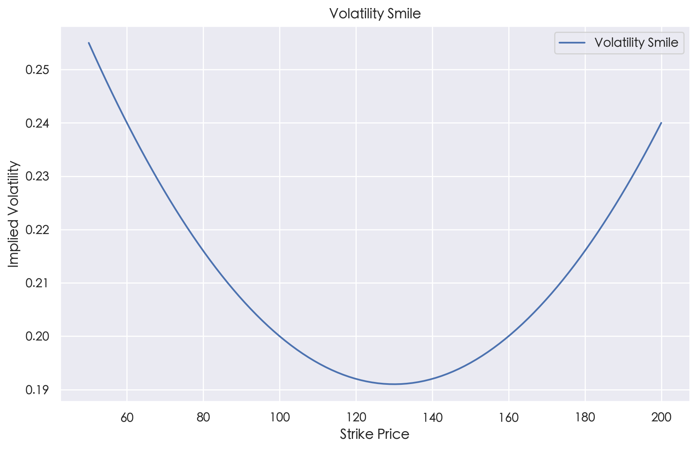
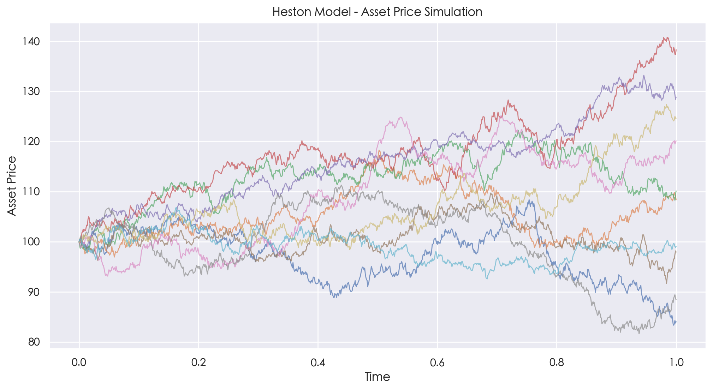

Implied Volatility Skew (Smile)
This chapter covers the following topics:
- Implied Volatility, Numerical Inversion, and the Volatility Term Structure.
- Volatility Smile, Static No-Arbitrage Conditions, and SVI/SSVI Surface Parameterizations.
- Market-Implied Density (Breeden–Litzenberger Formula).
- Local Volatility Models and Dupire's Equation.
- Stochastic Volatility, Rough Volatility, and Local-Stochastic Volatility (LSV) Models.
- Variance Swaps, Static Replication (Carr–Madan), and the VIX Index.
The most subjective parameter in the Black–Scholes model is the volatility $\sigma$; all other inputs are determined either by the contract specification ($K, T$) or by observable market quantities ($S_0, r, q$).
- In a constant-volatility log-normal model, $\sigma^2 T$ is the variance of the log-price over $[0, T]$.
- More generally, when the spot volatility $\sigma(s)$ is a deterministic function of time, the cumulative variance of the log-price over $[0, t]$ is $\int_0^t \sigma^2(s)\dd s$, which can be represented by the root-mean-square average volatility over $[0, T]$: \[ \overline{\sigma} = \sqrt{\frac{1}{T}\int_0^T \sigma^2(s)\dd s}. \]
05.1 Implied Volatility
The implied volatility $\sigma_I$ of a European option is the constant volatility parameter that equates the Black–Scholes theoretical price to the observed market price $M(S_0, r, T, K)$: \[ M(S_0, r, T, K) = \BS(\sigma_I; S_0, r, T, K). \]
By put–call parity, a European call option and a European put option with the same underlying, strike $K$, and maturity $T$ must have the same implied volatility.
05.6.1 Newton–Raphson Method
Because the Black–Scholes price is strictly increasing in $\sigma$ (positive Vega), a unique implied volatility $\sigma_I > 0$ exists whenever the observed market price lies strictly within the static no-arbitrage bounds (for example, $(S_0 - K e^{-rT})^+ < M < S_0$ for a European call on a non-dividend-paying stock). Since $\BS(\sigma_I; S_0, r, T, K)$ cannot be inverted in closed form, $\sigma_I$ is computed numerically by finding the root of \[ f(\sigma_I) = \BS(\sigma_I; S_0, r, T, K) - M(S_0, r, T, K) = 0. \] The Newton–Raphson iteration takes the form \[ \sigma_I^{k+1} = \sigma_I^k - f(\sigma_I^k)\left(\left.\frac{\partial \BS}{\partial \sigma_I}\right|_{\sigma_I^k}\right)^{-1}, \] where $\partial \BS / \partial \sigma_I$ is the option's Black–Scholes Vega. While Newton–Raphson converges quadratically near the root, Vega approaches zero for deep in-the-money and deep out-of-the-money options (or very short maturities), which can cause iterates to overshoot or diverge; in practice, Newton–Raphson is therefore safeguarded with a bracketing algorithm such as bisection or Brent's method.
Consider a European call option on a non-dividend-paying stock with $S_0 = 100$, $K = 100$, $r = 5\%$, $T = 1$, and observed market price $C_{\mathrm{mkt}} = 10.4506$. Starting from the initial guess $\sigma_I^{(0)} = 0.30$, four iterations of $\sigma_I^{(k+1)} = \sigma_I^{(k)} - \bigl(\BS(\sigma_I^{(k)}) - C_{\mathrm{mkt}}\bigr)/\mathcal{V}(\sigma_I^{(k)})$ proceed as follows: \begin{center} \begin{tabular}{cccccc} \toprule $k$ & $\sigma_I^{(k)}$ & $\BS(\sigma_I^{(k)})$ & $f(\sigma_I^{(k)}) = \BS - C_{\mathrm{mkt}}$ & $\mathcal{V}(\sigma_I^{(k)})$ & $\sigma_I^{(k+1)}$ \\ \midrule $0$ & $0.30000000$ & $14.231255$ & $+3.780655$ & $37.9433$ & $0.20036039$ \\ $1$ & $0.20036039$ & $10.464108$ & $+0.013508$ & $37.5276$ & $0.20000045$ \\ $2$ & $0.20000045$ & $10.450601$ & $+6.35 \times 10^{-7}$ & $37.5240$ & $0.20000044$ \\ $3$ & $0.20000044$ & $10.450600$ & $-5.33 \times 10^{-15}$ & $37.5240$ & $0.20000044$ \\ \bottomrule \end{tabular} \end{center} The error squares at each step ($3.78 \to 1.35 \times 10^{-2} \to 6.35 \times 10^{-7} \to 5.33 \times 10^{-15}$), illustrating quadratic convergence to $\sigma_I = 0.2000$ (to four decimal places, matching $\BS(0.2000) = 10.450584$).
By contrast, consider a deep out-of-the-money call with $K = 180$ (same $S_0 = 100$, $r = 5\%$, $T = 1$) trading at $C_{\mathrm{mkt}} = 0.028643$ (true implied volatility $\sigma_I = 0.20$). If Newton–Raphson is initialized at $\sigma_I^{(0)} = 0.10$, the option is far in the right tail of the log-normal distribution, giving $\BS(0.10) \approx 8.61 \times 10^{-8}$ and a vanishingly small Vega $\mathcal{V}(0.10) \approx 2.73 \times 10^{-5}$. The very first Newton step therefore overshoots dramatically to \[ \sigma_I^{(1)} = 0.10 - \frac{8.61 \times 10^{-8} - 0.028643}{2.73 \times 10^{-5}} \approx 1{,}047.43 \] (over $104{,}700\%$ volatility), where the Black–Scholes price saturates numerically at $S_0 = 100$ and Vega underflows to zero, causing the unsafeguarded algorithm to fail.
05.6.2 Volatility Term Structure
The volatility term structure is the relationship between implied volatility $\sigma_I(T)$ and time to maturity $T$ for a fixed strike (or moneyness).
Given a continuous term structure of implied volatilities $\sigma_I(T)$ for $0 < T \le T_N$, the cumulative variance satisfies \[ \sigma_I^2(T)\,T = \int_0^T \sigma^2(s)\dd s. \] Differentiating with respect to $T$ yields the instantaneous forward (spot) volatility: \[ \sigma(T) = \sqrt{\frac{d}{dT}\bigl(\sigma_I^2(T)\,T\bigr)} = \sqrt{\sigma_I^2(T) + 2T\,\sigma_I(T)\frac{d\sigma_I(T)}{dT}}. \] For this square root to be real-valued, the total implied variance $w(T) := \sigma_I^2(T)\,T$ must be non-decreasing in $T$, i.e., $\frac{d}{dT}\bigl(\sigma_I^2(T)\,T\bigr) \ge 0$, which is precisely the condition for the absence of calendar-spread arbitrage.
In practice, market prices are observed at discrete benchmark maturities $0 = T_0 < T_1 < T_2 < \dots < T_N$, yielding implied volatilities $\sigma_I(T_1), \dots, \sigma_I(T_N)$. A discrete bootstrapping algorithm extracts a piecewise-constant spot volatility function $\sigma(t)$ from \[ \sigma_I^2(T_k)\,T_k = \sigma_I^2(T_{k-1})\,T_{k-1} + \int_{T_{k-1}}^{T_k} \sigma^2(s)\dd s, \] giving \[ \sigma(t) = \sqrt{\frac{\sigma_I^2(T_k)\,T_k - \sigma_I^2(T_{k-1})\,T_{k-1}}{T_k - T_{k-1}}}, \qquad t \in (T_{k-1}, T_k), \] provided the no-calendar-arbitrage condition $\sigma_I^2(T_k)\,T_k \ge \sigma_I^2(T_{k-1})\,T_{k-1}$ holds for every $k$.
Suppose at-the-money-forward implied volatilities are quoted at three maturities: $T_1 = 0.5$ ($\sigma_I = 22\%$), $T_2 = 1.0$ ($\sigma_I = 20\%$), and $T_3 = 1.5$ ($\sigma_I = 16\%$). Computing the total implied variance $w(T_k) = \sigma_I^2(T_k)\,T_k$ and piecewise-constant forward variance $\sigma_{\mathrm{fwd}}^2 = \frac{w(T_k) - w(T_{k-1})}{T_k - T_{k-1}}$ gives: \begin{center} \begin{tabular}{cccccc} \toprule Interval & $T_k$ & $\sigma_I(T_k)$ & $w(T_k) = \sigma_I^2 T_k$ & $\Delta w_k / \Delta T_k$ & $\sigma_{\mathrm{fwd}}$ \\ \midrule $(0, 0.5]$ & $0.5$ & $22\%$ & $0.0242$ & $0.0484$ & $22.00\%$ \\ $(0.5, 1.0]$ & $1.0$ & $20\%$ & $0.0400$ & $0.0316$ & $17.78\%$ \\ $(1.0, 1.5]$ & $1.5$ & $16\%$ & $0.0384$ & $-0.0032$ & undefined (arbitrage) \\ \bottomrule \end{tabular} \end{center} Although implied volatility declines from $22\%$ at $T_1 = 0.5$ to $20\%$ at $T_2 = 1.0$, total implied variance still increases from $w(0.5) = 0.0242$ to $w(1.0) = 0.0400$, yielding a valid forward volatility $\sigma_{\mathrm{fwd}} = \sqrt{(0.0400 - 0.0242)/0.5} = \sqrt{0.0316} \approx 17.78\%$ on $(0.5, 1.0]$. Between $T_2 = 1.0$ and $T_3 = 1.5$, however, total implied variance decreases ($w(1.5) = 0.0384 < w(1.0) = 0.0400$), producing a negative forward variance $-0.0032$. This violates the monotonicity condition $\partial_T w \ge 0$ and flags a calendar-spread arbitrage: buying the longer-dated $T_3 = 1.5$ option and selling the shorter-dated $T_2 = 1.0$ option at the same forward moneyness locks in a riskless profit.
05.2 Volatility Smile and Skew
In the pure Black–Scholes model, volatility is a constant independent of strike $K$; hence, for a fixed expiry $T$, implied volatility plotted against strike is completely flat.
In empirical option markets, however, implied volatility varies systematically across strikes for the same maturity. Options with strikes far from the forward price $F = S_0 e^{rT}$ (called wing options) trade at different implied volatilities than at-the-money (ATM) options. Two canonical shapes arise in practice (summarized in Table 05.1):
- Symmetric Volatility Smile (typical in foreign exchange markets): Both low-strike out-of-the-money (OTM) puts ($K \ll F$) and high-strike OTM calls ($K \gg F$) exhibit higher implied volatility than ATM options ($K \approx F$), reflecting heavy tails in both directions.
- Downward-Sloping Volatility Skew / Smirk (typical in equity index markets): Low-strike OTM puts ($K \ll F$) command substantially higher implied volatility than ATM options and high-strike OTM calls ($K \gg F$).
| Strike Region | Liquid OTM Contract | Symmetric Smile (FX) | Equity Skew (Smirk) |
|---|---|---|---|
| $K \ll F$ | OTM Put | $\sigma_I(K) > \sigma_{\text{ATM}}$ | $\sigma_I(K) \gg \sigma_{\text{ATM}}$ |
| $K \approx F$ | ATM Call / Put | $\sigma_{\text{ATM}}$ | $\sigma_{\text{ATM}}$ |
| $K \gg F$ | OTM Call | $\sigma_I(K) > \sigma_{\text{ATM}}$ | $\sigma_I(K) \lesssim \sigma_{\text{ATM}}$\tnote{a} |
The equity skew has a well-known economic explanation. During a market crash, volatility spikes as leveraged firms become riskier and panicked investors liquidate positions. To hedge downside risk, institutional investors heavily buy low-strike OTM put options to protect against portfolio losses, driving up their prices and hence their implied volatilities. Conversely, during a market rally, realized volatility tends to decline and upside call demand is often met by covered-call writing, keeping high-strike implied volatilities comparatively lower.
A simple quadratic parameterization illustrating a volatility smile (producing Figure 05.1) is provided in code/ch05_implied_volatility.py.

05.6.3 Static No-Arbitrage Conditions on the Volatility Surface
An arbitrary smooth function $\sigma_I(K, T)$ interpolated through market quotes is not automatically consistent with an arbitrage-free option market. To characterize static no-arbitrage directly on the implied volatility surface, it is standard to work in log-forward moneyness and total implied variance: \[ k := \ln\!\left(\frac{K}{F_T}\right), \qquad w(k, T) := \sigma_I^2(k, T)\,T, \] where $F_T = S_0 e^{(r - q)T}$ is the $T$-maturity forward price. In these dimensionless coordinates, the undiscounted normalized call price $c(k, w) := e^{rT} C(K, T) / F_T$ depends only on $(k, w)$:
$$ c(k, w) = \Phi(d_1) - e^k \Phi(d_2), \qquad d_{1,2} = -\frac{k}{\sqrt{w}} \pm \frac{1}{2}\sqrt{w}. $$Two static arbitrage constraints govern $w(k, T)$, together with an asymptotic wing bound:
- Absence of Calendar-Spread Arbitrage: Since $X_t := S_t / F_t$ is a positive $\Q$-martingale and $x \mapsto (x - e^k)^+$ is convex, Jensen's inequality implies that $c(k, w(k, T)) = \E^{\Q}[(X_T - e^k)^+]$ must be non-decreasing in $T$ for every fixed $k \in \R$. Because $\partial_w c(k, w) = \frac{1}{2\sqrt{w}}\phi(d_1) > 0$, this is equivalent to $$ \frac{\partial w(k, T)}{\partial T} \ge 0 \qquad \forall k \in \R,\; T > 0. $$
- Absence of Butterfly-Spread Arbitrage: For a fixed expiry $T$, non-negativity of the risk-neutral density $p(K, T) = e^{rT}\partial_{KK} C(K, T) \ge 0$ (derived in Section 05.3) requires $\partial_{KK} C \ge 0$. Changing variables from $K = F_T e^k$ to $k$ gives $K^2 \partial_{KK} C = F_T e^{-rT}(\partial_{kk} c - \partial_k c)$. Differentiating 05.1 twice with respect to $k$ along the smile $w = w(k)$ (holding $T$ fixed) and using $\phi'(d_2) = -d_2 \phi(d_2)$ and $e^k \phi(d_2) = \phi(d_1)$ yields the exact representation
\[
\frac{\partial^2 c}{\partial k^2} - \frac{\partial c}{\partial k}
= e^k \phi(d_2)\frac{g(k)}{\sqrt{w(k)}},
\]
where Gatheral's density function $g(k)$ is defined by
$$
g(k) := \left(1 - \frac{k w'(k)}{2 w(k)}\right)^2
- \frac{\bigl(w'(k)\bigr)^2}{4}\left(\frac{1}{w(k)} + \frac{1}{4}\right)
+ \frac{w''(k)}{2}.
$$
Consequently, a smile slice $w(k)$ is free of butterfly arbitrage if and only if $g(k) \ge 0$ for all $k \in \R$ and $\lim_{k \to +\infty} d_1(k) = -\infty$ (so that call prices vanish as $K \to \infty$).
- Wing Asymptotics (Roger Lee's Moment Formula): Even if $g(k) \ge 0$ locally, arbitrary extrapolation of $\sigma_I(k, T)$ into extreme strikes can violate no-arbitrage. Lee (2004) proved a sharp link between the existence of finite moments of $S_T$ and the extreme-strike slope of total implied variance.
Fix $T > 0$ and define the critical moment exponents \[ \tilde{p} := \sup\bigl\{p \ge 0 : \E^{\Q}[S_T^{1+p}] < \infty\bigr\}, \qquad \tilde{q} := \sup\bigl\{q \ge 0 : \E^{\Q}[S_T^{-q}] < \infty\bigr\}. \] Then the right-wing and left-wing asymptotic slopes of total implied variance satisfy
$$ \limsup_{k \to +\infty} \frac{w(k, T)}{k} = \psi(\tilde{p}) \le 2, \qquad \limsup_{k \to -\infty} \frac{w(k, T)}{|k|} = \psi(\tilde{q}) \le 2, $$where $\psi(x) := 2 - 4\bigl(\sqrt{x^2 + x} - x\bigr)$ maps $[0, \infty]$ strictly decreasingly onto $[0, 2]$, with $\psi(0) = 2$ and $\psi(\infty) = 0$.
Reference. For the complete proof, see R. Lee (2004), The Moment Formula for Implied Volatility at Extreme Strikes, Mathematical Finance 14(3), 469–480.
Theorem 05.1 implies that total implied variance $w(k, T)$ can grow at most linearly in $|k|$ as $|k| \to \infty$, with slope bounded above by $2$ (equivalently, $\sigma_I(k, T)$ grows at most as $\sqrt{2|k|/T}$). In particular, naive quadratic-in-$k$ implied volatility extrapolations inevitably violate butterfly no-arbitrage in the wings.
05.6.4 SVI and SSVI Surface Parameterizations
Motivated by Lee's linear-wing bound and the asymptotic smile of the Heston model, Gatheral (2004) introduced the Stochastic Volatility Inspired (SVI) parameterization. In its raw SVI form for a single expiry slice,
$$ w(k) = a + b\left\{\rho(k - m) + \sqrt{(k - m)^2 + \sigma^2}\right\}, $$where $a \in \R$ controls the overall variance level, $b \ge 0$ controls the angle between the left and right asymptotes, $\rho \in (-1, 1)$ rotates the smile (controlling skew), $m \in \R$ translates the smile horizontally, and $\sigma > 0$ controls ATM curvature. As $k \to \pm\infty$, $w(k) \sim b(1 \pm \rho)|k|$, which automatically obeys Lee's bound 05.4 whenever $b(1 + |\rho|) \le 2$.
While Raw SVI fits individual slices accurately, calibrating slices independently does not guarantee absence of calendar arbitrage across maturities. Gatheral and Jacquier (2014) resolved this by introducing the Surface SVI (SSVI) parameterization across both strike and maturity:
$$ w(k, \theta_t) = \frac{\theta_t}{2}\left(1 + \rho\,\varphi(\theta_t)k + \sqrt{\bigl(\varphi(\theta_t)k + \rho\bigr)^2 + 1 - \rho^2}\right), $$where $\theta_t := w(0, t) > 0$ is the ATM total variance term structure, $\rho \in (-1, 1)$, and $\varphi : (0, \infty) \to (0, \infty)$ is a smooth positive function governing how the skew decays with maturity (e.g., the power-law choice $\varphi(\theta) = \eta\,\theta^{-\gamma}$ with $\gamma \in (0, 1/2]$).
The SSVI total variance surface 05.6 is free of static arbitrage if the following analytical conditions hold:
- No Calendar-Spread Arbitrage: $\partial_t \theta_t \ge 0$ for all $t > 0$, and for all $\theta > 0$, \[ 0 \le \frac{\partial}{\partial \theta}\bigl(\theta\varphi(\theta)\bigr) \le \frac{1}{\rho^2}\bigl(1 + \sqrt{1 - \rho^2}\bigr)\varphi(\theta), \] where the upper bound is $+\infty$ when $\rho = 0$.
- No Butterfly-Spread Arbitrage: For all $\theta > 0$, \[ \theta\varphi(\theta)(1 + |\rho|) < 4 \qquad \text{and} \qquad \theta\varphi(\theta)^2(1 + |\rho|) \le 4. \]
Reference. See J. Gatheral and A. Jacquier (2014), Arbitrage-Free SVI Volatility Surfaces, Quantitative Finance 14(1), 59–71. These closed-form inequalities make SSVI a workhorse for institutional volatility surface construction, guaranteeing a globally arbitrage-free implied volatility surface prior to computing Dupire local volatility or pricing exotics.
05.3 Market-Implied Density
A continuum of European call prices across strikes uniquely determines the risk-neutral terminal distribution of $S_T$, a classic result due to Breeden and Litzenberger (1978). We first recall Leibniz's integral rule.
Let $f(x, y)$ and $\partial f / \partial x$ be continuous, and let $a(x), b(x)$ be continuously differentiable. Then \[ \frac{d}{dx}\int_{a(x)}^{b(x)} f(x, y)\dd y = \int_{a(x)}^{b(x)} \frac{\partial f}{\partial x}(x, y)\dd y + f\bigl(x, b(x)\bigr)\frac{db}{dx} - f\bigl(x, a(x)\bigr)\frac{da}{dx}. \]
In particular, for an upper limit equal to $x$ and a constant lower limit $-\infty$, \[ \frac{\partial}{\partial x}\left(\int_{-\infty}^x f(x, y, t)\dd t\right) = f(x, y, x) + \int_{-\infty}^x \frac{\partial f(x, y, t)}{\partial x}\dd t. \]
Fix the current time $t$ and spot price $S_t$, and let $p(s, T)$ denote the risk-neutral conditional probability density function of $S_T$ given $S_t$. The time-$t$ price of a European call with strike $K$ and maturity $T$ is \[ C(K, T) = \E^{\Q}\!\left[e^{-r(T-t)}(S_T - K)^+ \mid S_t\right] = e^{-r(T-t)}\int_K^{\infty} (s - K)\,p(s, T)\dd s. \] Differentiating with respect to $K$ via Lemma 05.1 gives
$$\begin{aligned} \frac{\partial C}{\partial K} &= e^{-r(T-t)}\left(0 \cdot p(K, T) - \int_K^{\infty} p(s, T)\dd s\right) = -e^{-r(T-t)}\int_K^{\infty} p(s, T)\dd s. \end{aligned}$$Differentiating a second time yields the Breeden–Litzenberger formula:
$$ \frac{\partial^2 C}{\partial K^2} = e^{-r(T-t)} p(K, T) \iff p(K, T) = e^{r(T-t)}\frac{\partial^2 C}{\partial K^2}. $$In addition, expanding $C(K, T) = e^{-r(T-t)}\int_K^{\infty} s\,p(s, T)\dd s - K e^{-r(T-t)}\int_K^{\infty} p(s, T)\dd s$ and substituting $\partial C/\partial K$ gives the useful identity
$$ \int_K^{\infty} s\,p(s, T)\dd s = e^{r(T-t)}\left(C(K, T) - K\frac{\partial C}{\partial K}\right), $$which plays a key role in Dupire's derivation below.
Equation 05.7 extracts the marginal risk-neutral density $p(\cdot, T)$ implied by market option prices, but it does not uniquely specify the dynamic process followed by $S_t$. Two major modeling paradigms reconcile the asset dynamics with the market-implied smile:
- Local Volatility Models, where volatility is a deterministic function of spot price and time.
- Stochastic Volatility Models, where volatility is itself driven by a separate stochastic process.
05.4 Local Volatility Model: Dupire's Equation
In a local volatility model, the risk-neutral dynamics of the underlying asset are \[ dS_u = r S_u\,du + \sigma_{\mathrm{loc}}(S_u, u) S_u\,dW_u^{\Q}, \] where $\sigma_{\mathrm{loc}}(S, T)$ is a deterministic function of the asset level $S$ and calendar time $T$. To relate $\sigma_{\mathrm{loc}}$ to observable call prices $C(K, T)$, we first establish the Fokker–Planck (Kolmogorov forward) equation.
Let $f(x, t \mid y, s)$ be the transition probability density of an Itô diffusion $X_t$ starting at $X_s = y$ and satisfying \[ dX_t = \mu(X_t, t)\,dt + \sigma(X_t, t)\,dW_t. \] Then $f(x, t) := f(x, t \mid y, s)$ satisfies the Fokker–Planck equation:
$$ \frac{\partial f}{\partial t} = -\frac{\partial}{\partial x}(\mu f) + \frac{1}{2}\frac{\partial^2}{\partial x^2}(\sigma^2 f). $$Let $h(t, x)$ be any smooth test function with compact support in $(s, T) \times \R$, so that $h(s, x) = h(T, x) = 0$. By Itô's Lemma, \[ h(T, X_T) = h(s, X_s) + \int_s^T \left(\frac{\partial h}{\partial t} + \mu\frac{\partial h}{\partial x} + \frac{1}{2}\sigma^2\frac{\partial^2 h}{\partial x^2}\right)dt + \int_s^T \sigma(X_t, t)\frac{\partial h}{\partial x}\,dW_t. \] Taking conditional expectations $\E[\,\cdot \mid X_s = y]$ eliminates both the boundary values and the stochastic integral, yielding \[ \iint_{(s, T) \times \R} \left(\frac{\partial h}{\partial t} + \mu\frac{\partial h}{\partial x} + \frac{1}{2}\sigma^2\frac{\partial^2 h}{\partial x^2}\right) f(x, t \mid y, s)\dd x\dd t = 0. \] Integrating by parts in $t$ and $x$ (using compact support of $h$ so all boundary terms vanish) gives \[ \iint_{(s, T) \times \R} h(t, x)\left(-\frac{\partial f}{\partial t} - \frac{\partial}{\partial x}(\mu f) + \frac{1}{2}\frac{\partial^2}{\partial x^2}(\sigma^2 f)\right)\dd x\dd t = 0. \] Since this holds for all smooth compactly supported $h$, the parenthesized expression vanishes identically, establishing 05.9. ◻
Applying Lemma 05.2 to the risk-neutral stock price $S_T$, the conditional density $p(s, T)$ (with fixed initial state $(t, S_t)$) satisfies \[ \frac{\partial p}{\partial T} = -\frac{\partial}{\partial s}\bigl(r s\,p(s, T)\bigr) + \frac{1}{2}\frac{\partial^2}{\partial s^2}\bigl(\sigma_{\mathrm{loc}}^2(s, T)\,s^2 p(s, T)\bigr). \] Differentiating $C(K, T) = e^{-r(T-t)}\int_K^{\infty}(s - K)\,p(s, T)\dd s$ with respect to maturity $T$ gives
$$\begin{aligned} \frac{\partial C}{\partial T} &= -r C + e^{-r(T-t)}\int_K^{\infty} (s - K)\frac{\partial p}{\partial T}(s, T)\dd s \\ &= -r C + e^{-r(T-t)}\left(-r I_1 + \frac{1}{2} I_2\right), \end{aligned}$$where \[ I_1 := \int_K^{\infty} (s - K)\frac{\partial}{\partial s}\bigl(s\,p(s, T)\bigr)\dd s, \qquad I_2 := \int_K^{\infty} (s - K)\frac{\partial^2}{\partial s^2}\bigl(s^2 \sigma_{\mathrm{loc}}^2(s, T)\,p(s, T)\bigr)\dd s. \] Integrating $I_1$ by parts (assuming sufficient tail decay of $p(s, T)$ as $s \to \infty$) and applying 05.8:
$$\begin{aligned} I_1 &= \Bigl[(s - K) s\,p(s, T)\Bigr]_{s=K}^{\infty} - \int_K^{\infty} s\,p(s, T)\dd s = -e^{r(T-t)}\left(C - K\frac{\partial C}{\partial K}\right). \end{aligned}$$Integrating $I_2$ by parts twice and applying the Breeden–Litzenberger formula 05.7:
$$\begin{aligned} I_2 &= \left[(s - K)\frac{\partial}{\partial s}\bigl(s^2 \sigma_{\mathrm{loc}}^2(s, T)\,p(s, T)\bigr)\right]_{s=K}^{\infty} - \int_K^{\infty} \frac{\partial}{\partial s}\bigl(s^2 \sigma_{\mathrm{loc}}^2(s, T)\,p(s, T)\bigr)\dd s \\ &= -\Bigl[s^2 \sigma_{\mathrm{loc}}^2(s, T)\,p(s, T)\Bigr]_{s=K}^{\infty} \\ &= K^2 \sigma_{\mathrm{loc}}^2(K, T)\,p(K, T) = e^{r(T-t)} K^2 \sigma_{\mathrm{loc}}^2(K, T)\frac{\partial^2 C}{\partial K^2}. \end{aligned}$$Combining $I_1$ and $I_2$ yields \[ \frac{\partial C}{\partial T} + r C = r\left(C - K\frac{\partial C}{\partial K}\right) + \frac{1}{2} K^2 \sigma_{\mathrm{loc}}^2(K, T)\frac{\partial^2 C}{\partial K^2}. \] Canceling $rC$ from both sides gives Dupire's celebrated formula.
In a local volatility model without dividends, the local variance $\sigma_{\mathrm{loc}}^2(K, T)$ is uniquely determined by the European call price surface $C(K, T)$ via
$$ \sigma_{\mathrm{loc}}^2(K, T) = \frac{\dfrac{\partial C}{\partial T} + r K \dfrac{\partial C}{\partial K}}{\dfrac{1}{2} K^2 \dfrac{\partial^2 C}{\partial K^2}}. $$05.5 Stochastic Volatility Models
While Black–Scholes assumes constant volatility and Dupire's local volatility model makes volatility a deterministic function of $(S, T)$, stochastic volatility models assign a separate stochastic differential equation to the volatility (or variance) process driving the underlying asset.
To understand intuitively why stochastic volatility generates a volatility smile, let $B(\sigma) := \BS(T - t, S_t, K, \sigma)$ denote the Black–Scholes price as a function of volatility. Its second derivative with respect to $\sigma$ (known as Volga or Vomma) is \[ \frac{\partial^2 B}{\partial \sigma^2} = \text{Vega}\cdot\frac{d_1 d_2}{\sigma}. \] Notice that $B(\sigma)$ is not globally convex in $\sigma$:
- Near at-the-money ($K \approx S_t e^{r(T-t)}$), $d_1 > 0 > d_2$, so $d_1 d_2 < 0$ and $B(\sigma)$ is concave in $\sigma$.
- In the wings (deep OTM or deep ITM strikes), $d_1$ and $d_2$ have the same sign, so $d_1 d_2 > 0$ and $B(\sigma)$ is convex in $\sigma$.
Under uncorrelated stochastic volatility ($\rho = 0$), the Hull–White (1987) mixing formula states that the option price equals the expectation of the Black–Scholes price evaluated at the realized root-mean-square volatility $\bar{\sigma} := \sqrt{\frac{1}{T-t}\int_t^T \sigma_u^2\,du}$: \[ V = \E^{\Q}\bigl[B(\bar{\sigma})\bigr]. \] By Jensen's inequality applied locally, averaging over random $\bar{\sigma}$ raises wing option prices (where $B$ is convex) relative to ATM prices (where $B$ is slightly concave), thereby lifting implied volatilities in the wings and producing a volatility smile. Adding negative correlation ($\rho < 0$) between asset returns and volatility tilts this symmetric smile into a downward-sloping equity skew.
A simple static volatility-mixing model illustrates this mechanism: draw a random volatility $\alpha \sim \mathcal{D}(\mu, \nu^2)$ with density $p_{\mu,\nu}(\alpha)$, where $\mu$ controls the overall level and $\nu$ controls the smile curvature. One calibrates $\mu$ to match the market ATM option price $A(T - t, S_t)$: \[ \int_{\Omega_{\alpha}} \BS(T - t, S_t, K = S_t, \alpha)\,p_{\mu,\nu}(\alpha)\dd\alpha = A(T - t, S_t), \] and then prices away-from-the-money options via \[ V(T - t, S_t, K) = \int_{\Omega_{\alpha}} \BS(T - t, S_t, K, \alpha)\,p_{\mu,\nu}(\alpha)\dd\alpha. \]
05.6.5 Stochastic Volatility Pricing Framework
We now derive the pricing PDE for a general continuous-time stochastic volatility model:
$$\begin{aligned} dS_t &= \mu S_t\,dt + \sigma_t S_t\,dW_t, \\ d\sigma_t &= \mu_{\sigma}(t, \sigma_t)\,dt + b(t, \sigma_t)\,dZ_t, \\ d\langle W, Z \rangle_t &= \rho\,dt. \end{aligned}$$Because volatility $\sigma_t$ is not directly tradable, a single underlying asset $S_t$ cannot hedge both sources of randomness ($W_t$ and $Z_t$). The market is incomplete unless we include a second liquid derivative $V_t^1 = V^1(t, S_t, \sigma_t)$ in the hedging portfolio.
Consider a portfolio $\Pi_t$ holding one unit of the target derivative $V_t = V(t, S_t, \sigma_t)$, $\alpha_t$ shares of $S_t$, $\kappa_t$ units of the benchmark derivative $V_t^1$, and $\beta_t$ units of the money market account $B_t$: \[ \Pi_t = V_t + \alpha_t S_t + \kappa_t V_t^1 + \beta_t B_t. \] The replication condition ($\Pi_t = 0$) and self-financing condition give \[ \beta_t B_t = -(V_t + \alpha_t S_t + \kappa_t V_t^1), \qquad d\Pi_t = dV_t + \alpha_t\,dS_t + \kappa_t\,dV_t^1 + \beta_t\,dB_t. \] By the two-dimensional Itô's Lemma,
$$\begin{aligned} dV_t &= \frac{\partial V_t}{\partial t}\,dt + \frac{\partial V_t}{\partial S}\,dS_t + \frac{\partial V_t}{\partial \sigma}\,d\sigma_t + \frac{1}{2}\frac{\partial^2 V_t}{\partial S^2}\,(dS_t)^2 + \frac{1}{2}\frac{\partial^2 V_t}{\partial \sigma^2}\,(d\sigma_t)^2 + \frac{\partial^2 V_t}{\partial S \partial \sigma}\,dS_t\,d\sigma_t, \\ dV_t^1 &= \frac{\partial V_t^1}{\partial t}\,dt + \frac{\partial V_t^1}{\partial S}\,dS_t + \frac{\partial V_t^1}{\partial \sigma}\,d\sigma_t + \frac{1}{2}\frac{\partial^2 V_t^1}{\partial S^2}\,(dS_t)^2 + \frac{1}{2}\frac{\partial^2 V_t^1}{\partial \sigma^2}\,(d\sigma_t)^2 + \frac{\partial^2 V_t^1}{\partial S \partial \sigma}\,dS_t\,d\sigma_t. \end{aligned}$$To eliminate both $dS_t$ and $d\sigma_t$ terms from $d\Pi_t$, we impose two-factor hedging: \[ \alpha_t = -\frac{\partial V_t}{\partial S} - \kappa_t\frac{\partial V_t^1}{\partial S}, \qquad \kappa_t = -\frac{\partial V_t / \partial \sigma}{\partial V_t^1 / \partial \sigma}. \] Substituting these into $d\Pi_t$ and using $\beta_t\,dB_t = r\beta_t B_t\,dt = -r(V_t + \alpha_t S_t + \kappa_t V_t^1)\,dt$ yields
$$\begin{aligned} d\Pi_t &= \left(\frac{\partial V_t}{\partial t} + \frac{1}{2}\sigma_t^2 S_t^2 \frac{\partial^2 V_t}{\partial S^2} + \frac{1}{2}b^2(t, \sigma_t)\frac{\partial^2 V_t}{\partial \sigma^2} + \rho\sigma_t S_t b(t, \sigma_t)\frac{\partial^2 V_t}{\partial S \partial \sigma}\right)dt \\ &\quad + \kappa_t\left(\frac{\partial V_t^1}{\partial t} + \frac{1}{2}\sigma_t^2 S_t^2 \frac{\partial^2 V_t^1}{\partial S^2} + \frac{1}{2}b^2(t, \sigma_t)\frac{\partial^2 V_t^1}{\partial \sigma^2} + \rho\sigma_t S_t b(t, \sigma_t)\frac{\partial^2 V_t^1}{\partial S \partial \sigma}\right)dt \\ &\quad - r(V_t + \alpha_t S_t + \kappa_t V_t^1)\,dt. \end{aligned}$$Defining the differential operator \[ \mathcal{L} := \frac{\partial}{\partial t} + \frac{1}{2}\sigma_t^2 S_t^2 \frac{\partial^2}{\partial S^2} + \frac{1}{2}b^2(t, \sigma_t)\frac{\partial^2}{\partial \sigma^2} + \rho\sigma_t S_t b(t, \sigma_t)\frac{\partial^2}{\partial S \partial \sigma}, \] the no-arbitrage condition $d\Pi_t = 0$ becomes \[ \mathcal{L}(V_t) + \kappa_t\mathcal{L}(V_t^1) - r\left(V_t - S_t\frac{\partial V_t}{\partial S} - \kappa_t S_t\frac{\partial V_t^1}{\partial S} + \kappa_t V_t^1\right) = 0. \] Substituting $\kappa_t = -(\partial V_t / \partial \sigma) / (\partial V_t^1 / \partial \sigma)$ and separating terms depending on $V_t$ and $V_t^1$, we obtain \[ \frac{\mathcal{L}(V_t) + r S_t \dfrac{\partial V_t}{\partial S} - r V_t}{\dfrac{\partial V_t}{\partial \sigma}} = \frac{\mathcal{L}(V_t^1) + r S_t \dfrac{\partial V_t^1}{\partial S} - r V_t^1}{\dfrac{\partial V_t^1}{\partial \sigma}}. \] Since the left-hand side depends only on $V_t$ and the right-hand side only on $V_t^1$, both sides must equal a common function $-a(t, S_t, \sigma_t)$ independent of the particular derivative contract (reflecting the market price of volatility risk). This gives the stochastic volatility pricing PDE:
$$ \frac{\partial V}{\partial t} + r S \frac{\partial V}{\partial S} + a(t, S, \sigma)\frac{\partial V}{\partial \sigma} + \frac{1}{2}\sigma^2 S^2 \frac{\partial^2 V}{\partial S^2} + \frac{1}{2}b^2(t, \sigma)\frac{\partial^2 V}{\partial \sigma^2} + \rho\sigma S b(t, \sigma)\frac{\partial^2 V}{\partial S \partial \sigma} - r V = 0. $$By the multi-dimensional Feynman–Kac Theorem, the risk-neutral dynamics associated with 05.11 are
$$\begin{aligned} dS_t &= r S_t\,dt + \sigma_t S_t\,dW_t^{\Q}, \\ d\sigma_t &= a(t, S_t, \sigma_t)\,dt + b(t, \sigma_t)\,dZ_t^{\Q}, \\ d\langle W^{\Q}, Z^{\Q} \rangle_t &= \rho\,dt. \end{aligned}$$Indeed, setting $f(t, S, \sigma) := e^{-r(t - t_0)} V(t, S, \sigma)$ transforms 05.11 into \[ \frac{\partial f}{\partial t} + r S \frac{\partial f}{\partial S} + a(t, S, \sigma)\frac{\partial f}{\partial \sigma} + \frac{1}{2}\sigma^2 S^2 \frac{\partial^2 f}{\partial S^2} + \frac{1}{2}b^2(t, \sigma)\frac{\partial^2 f}{\partial \sigma^2} + \rho\sigma S b(t, \sigma)\frac{\partial^2 f}{\partial S \partial \sigma} = 0. \] Applying multi-dimensional Itô's Lemma to $f(t, S_t, \sigma_t)$ under $\Q$, the drift vanishes identically by the PDE above, leaving \[ f(T, S_T, \sigma_T) = f(t_0, S_{t_0}, \sigma_{t_0}) + \int_{t_0}^T \frac{\partial f}{\partial S}\sigma_t S_t\,dW_t^{\Q} + \int_{t_0}^T \frac{\partial f}{\partial \sigma}b(t, \sigma_t)\,dZ_t^{\Q}. \] Taking conditional expectations under $\Q$ yields the risk-neutral pricing formula \[ V(t, S_t, \sigma_t) = \E^{\Q}\!\left[e^{-r(T-t)}\varphi(S_T) \mid S_t, \sigma_t\right], \] where we used the fact that for a vanilla European option, the terminal payoff depends only on $S_T$ and not on terminal volatility $\sigma_T$, i.e., $V(T, S_T, \sigma_T) = \varphi(S_T)$. In general, because the distribution of $S_T$ depends on the entire path of $\sigma_t$ over $(t, T)$, numerical methods such as Monte Carlo simulation, finite differences, or Fourier transform techniques are required to evaluate the expectation.
The drift $a(t, S_t, \sigma_t)$ encodes the market price of volatility risk and is not determined by no-arbitrage from the stock alone; rather, it is calibrated to observed market prices of liquid benchmark options $V_t^1$. Once $a(t, S_t, \sigma_t)$ is calibrated to market prices, the model prices exotic or illiquid derivatives consistently without introducing arbitrage.
05.6.6 SABR and Heston Models
Two of the most widely used stochastic volatility models in practice are the SABR model and the Heston model.
The SABR model (Hagan et al., 2002) specifies risk-neutral dynamics directly on the forward price $F_t = F(t, T)$ (which coincides with $S_T$ at $t = T$):
$$\begin{aligned} dF_t &= \sigma_t F_t^{\beta}\,dW_t, && F_0 \text{ given}, \\ d\sigma_t &= \nu \sigma_t\,dZ_t, && \sigma_0 \text{ given}, \\ d\langle W, Z \rangle_t &= \rho\,dt. \end{aligned}$$Here $\beta \in [0, 1]$ interpolates between normal/Gaussian ($\beta = 0$) and log-normal ($\beta = 1$) backbone dynamics, $\nu > 0$ is the volatility of volatility, and $\rho \in (-1, 1)$ is the correlation between forward and volatility shocks. Note that for $0 < \beta < 1$, the boundary $F_t = 0$ is an absorbing boundary; in low- or negative-interest-rate environments, practitioners commonly employ the shifted SABR model, $dF_t = \sigma_t (F_t + s)^{\beta}\,dW_t$ with shift $s > 0$, to allow negative forward rates.
The Heston model (Heston, 1993) models the instantaneous variance $v_t = \sigma_t^2$ as a mean-reverting Cox–Ingersoll–Ross (CIR) square-root process:
$$\begin{aligned} dS_t &= \mu S_t\,dt + \sqrt{v_t}\,S_t\,dW_t, && S_0 \text{ given}, \\ dv_t &= \kappa(\theta - v_t)\,dt + \eta\sqrt{v_t}\,dZ_t, && v_0 \text{ given}, \\ d\langle W, Z \rangle_t &= \rho\,dt, \end{aligned}$$where $\kappa > 0$ is the speed of mean reversion, $\theta > 0$ is the long-run variance level, and $\eta > 0$ is the volatility of variance. When the Feller condition $2\kappa\theta > \eta^2$ holds, the variance process $v_t$ remains strictly positive almost surely. A major practical advantage of the Heston model is its affine structure, which yields a closed-form characteristic function for $\log S_T$ and therefore enables fast semi-analytical option pricing via Fourier inversion (see Figure 05.2).

05.6.7 Rough Volatility Models
Despite their elegance, classical Markovian stochastic volatility models (such as Heston and SABR, driven by standard Brownian motion with Hurst exponent $H = 1/2$) suffer from a striking empirical failure at short maturities. Define the at-the-money implied volatility skew at maturity $T$ by \[ \psi(T) := \left|\frac{\partial \sigma_I(k, T)}{\partial k}\right|_{k=0}. \] In any classical diffusive stochastic volatility model where $v_t$ is a semimartingale driven by standard Brownian motion, a small-time asymptotic expansion of the implied volatility surface yields \[ \sigma_I(k, T) = \sqrt{v_0} + \frac{\rho\eta}{4\sqrt{v_0}}\,k + O(T, k^2), \] so that $\psi(T) = O(1)$ approaches a finite constant as $T \to 0$. In real equity index markets (such as S&P 500 options), however, the empirical ATM skew explodes at short maturities according to a clean power law: \[ \psi(T) \sim c\,T^{-\alpha}, \qquad \alpha \approx 0.4 \qquad (T \to 0). \]
Building on the fractional Brownian motion $W_t^H$ introduced in Chapter 03, Gatheral, Jaisson, and Rosenbaum (2018) demonstrated empirically that log-realized volatility has Hölder regularity far rougher than Brownian motion, with Hurst parameter $H \approx 0.1 \ll 1/2$, and showed that replacing Brownian drivers with fractional Volterra kernels resolves the short-dated skew puzzle. Two canonical rough volatility models have emerged:
- Rough Bergomi (rBergomi) Model (Bayer, Friz, and Gatheral, 2016): Under $\Q$, the spot price and instantaneous variance satisfy
$$
\dd S_t = r S_t \dd t + \sqrt{v_t}\,S_t \dd W_t^{\Q}, \qquad
v_t = \xi_0(t)\exp\!\left(\eta\sqrt{2H}\int_0^t (t - s)^{H - 1/2}\dd Z_s^{\Q} - \frac{1}{2}\eta^2 t^{2H}\right),
$$
with $\dd\langle W^{\Q}, Z^{\Q}\rangle_t = \rho \dd t$ and $H \in (0, 1/2)$. Here $\xi_0(t) = \E^{\Q}[v_t]$ is the initial forward variance curve; since the Riemann–Liouville fractional Brownian motion $\widetilde{W}_t^H := \sqrt{2H}\int_0^t (t - s)^{H - 1/2}\dd Z_s^{\Q}$ is Gaussian with variance $2H \int_0^t (t - s)^{2H - 1}\dd s = t^{2H}$, the Wick exponential factor $-\frac{1}{2}\eta^2 t^{2H}$ ensures $\E^{\Q}[v_t] = \xi_0(t)$ identically.
- Rough Heston Model (El Euch and Rosenbaum, 2019): Generalizing the classical Heston SDE by convolving the drift and diffusion with the fractional kernel $(t - s)^{H - 1/2}/\Gamma(H + 1/2)$ yields the stochastic Volterra integral equation
$$
v_t = v_0 + \frac{1}{\Gamma(H + 1/2)}\int_0^t (t - s)^{H - 1/2}\bigl(\kappa(\theta - v_s)\dd s + \eta\sqrt{v_s}\dd Z_s^{\Q}\bigr),
$$
which reduces to the classical Heston model when $H = 1/2$ (since $\Gamma(1) = 1$) and retains an affine Volterra structure whose characteristic function satisfies a fractional Riccati equation.
To see directly how the singular kernel $(t - s)^{H - 1/2}$ generates the empirical power-law blow-up of $\psi(T)$, consider the leading-order Bergomi–Guyon small-maturity skew relation linking $\psi(T)$ to the covariance between the log-return $X_T := \int_0^T \sqrt{v_t}\dd W_t^{\Q}$ and integrated variance $I_T := \int_0^T v_t \dd t$: \[ \psi(T) \sim \frac{\bigl|\Cov(X_T, I_T)\bigr|}{2 v_0^{3/2} T^2} \qquad \text{as } T \to 0. \] In the rBergomi model 05.12 with flat initial variance $\xi_0(t) \equiv v_0$, linearizing the exponential for small $t$ gives $v_t - v_0 \approx \eta v_0 \sqrt{2H}\int_0^t (t - s)^{H - 1/2}\dd Z_s^{\Q}$. By Itô's isometry and Fubini's theorem,
$$\begin{aligned} \Cov(X_T, I_T) &\approx \E^{\Q}\!\left[\left(\int_0^T \sqrt{v_0}\dd W_s^{\Q}\right)\left(\int_0^T \eta v_0\sqrt{2H}\int_0^t (t - s)^{H - 1/2}\dd Z_s^{\Q}\dd t\right)\right] \\ &= \rho\eta v_0^{3/2}\sqrt{2H}\int_0^T \int_0^t (t - s)^{H - 1/2}\dd s \dd t = \frac{\rho\eta v_0^{3/2}\sqrt{2H}}{(H + 1/2)(H + 3/2)}\,T^{H + 3/2}. \end{aligned}$$Dividing by $2 v_0^{3/2} T^2$ yields the exact short-maturity skew scaling:
$$ \psi(T) \sim \frac{|\rho|\eta\sqrt{2H}}{2(H + 1/2)(H + 3/2)}\,T^{H - 1/2} \qquad \text{as } T \to 0. $$When $H = 1/2$, 05.14 recovers the constant classical limit $\frac{|\rho|\eta}{4}$ ($O(1)$); when $H \approx 0.1$, it produces $\psi(T) \sim c\,T^{-0.4}$, matching the empirical equity term structure of skew with only three parameters $(\eta, \rho, H)$.
05.6.8 Local-Stochastic Volatility (LSV) Models
In practice, local volatility (LV) and stochastic volatility (SV) models exhibit complementary strengths and weaknesses: Dupire's LV model calibrates the entire vanilla option surface exactly, but produces unrealistically flat forward-starting smiles; conversely, pure SV models generate realistic forward-smile dynamics, but cannot match every market vanilla quote with a small fixed parameter set. Local-Stochastic Volatility (LSV) models combine both paradigms via
$$ \dd S_t = r S_t \dd t + L(t, S_t)\sqrt{v_t}\,S_t \dd W_t^{\Q}, $$where $v_t$ is a stochastic variance process (e.g., Heston or log-normal) and $L(t, S)$ is a deterministic leverage function. The mathematical bridge that guarantees exact vanilla calibration of 05.15 is Gyöngy's (1986) Mimicking Theorem.
Let $X_t$ be an Itô process satisfying $\dd X_t = \mu_t \dd t + \sigma_t \dd W_t$ with bounded, adapted coefficients and $\sigma_t\sigma_t^\top$ uniformly elliptic. Define the deterministic functions \[ \widetilde{\mu}(t, x) := \E[\mu_t \mid X_t = x], \qquad \widetilde{\sigma}^2(t, x) := \E[\sigma_t^2 \mid X_t = x]. \] Then there exists a Markovian SDE $\dd \widetilde{X}_t = \widetilde{\mu}(t, \widetilde{X}_t)\dd t + \widetilde{\sigma}(t, \widetilde{X}_t)\dd \widetilde{W}_t$ whose one-dimensional marginal distribution matches that of $X_t$ for every $t \ge 0$.
Reference. See I. Gyöngy (1986), Mimicking the One-Dimensional Marginal Distributions of Processes Having an Itô Differential, Probab. Theory Relat. Fields 71, 501–516.
Applying Theorem 05.4 to the LSV spot process 05.15, its one-dimensional marginal distributions (and therefore all European vanilla option prices across all strikes $K$ and maturities $t$) coincide with Dupire's local volatility model $\dd \widetilde{S}_t = r\widetilde{S}_t \dd t + \sigma_{\mathrm{loc}}(t, \widetilde{S}_t)\widetilde{S}_t \dd \widetilde{W}_t^{\Q}$ if and only if \[ \sigma_{\mathrm{loc}}^2(t, K) = \E^{\Q}\bigl[L^2(t, S_t)\,v_t \mid S_t = K\bigr] = L^2(t, K)\,\E^{\Q}[v_t \mid S_t = K]. \] Solving for the leverage function yields the fundamental LSV calibration identity:
$$ L^2(t, K) = \frac{\sigma_{\mathrm{loc}}^2(t, K)}{\E^{\Q}[v_t \mid S_t = K]}. $$Because the conditional expectation $\E^{\Q}[v_t \mid S_t = K]$ itself depends on the joint law of $(S_t, v_t)$ induced by $L$, 05.15 and 05.16 form a nonlinear McKean–Vlasov SDE, which practitioners solve forward in time via interacting particle Monte Carlo methods or two-dimensional Fokker–Planck PDEs. The resulting LSV model simultaneously matches vanilla markets to machine precision and preserves realistic stochastic forward smiles for exotic derivatives such as cliquets and barrier options.
05.6 Variance Swaps and the VIX Index
A variance swap is a forward contract on realized variance paying $\frac{1}{T}\int_0^T \sigma_t^2 \dd t - K_{\mathrm{var}}$ at maturity $T$ (per unit of variance notional), where $K_{\mathrm{var}}$ is the fair strike set at $t = 0$ so that the contract has zero initial value. Remarkably, for any continuous asset price process with arbitrary stochastic volatility, $K_{\mathrm{var}}$ admits a model-free static replication in terms of a strip of out-of-the-money European puts and calls.
The key tool is the Carr–Madan spanning formula, which decomposes any smooth payoff into cash, forwards, and a continuum of OTM options.
Let $f \in C^2(0, \infty)$ be twice continuously differentiable and let $F > 0$ be any fixed reference level. Then for every $S_T > 0$,
$$ f(S_T) = f(F) + f'(F)(S_T - F) + \int_0^F f''(K)(K - S_T)^+\dd K + \int_F^{\infty} f''(K)(S_T - K)^+\dd K. $$By the fundamental theorem of calculus, $f(S_T) - f(F) = \int_F^{S_T} f'(u)\dd u$. If $S_T \ge F$, substituting $f'(u) = f'(F) + \int_F^u f''(K)\dd K$ and exchanging the order of integration via Fubini's theorem gives
$$\begin{aligned} f(S_T) - f(F) &= f'(F)(S_T - F) + \int_F^{S_T} \int_F^u f''(K)\dd K \dd u \\ &= f'(F)(S_T - F) + \int_F^{S_T} f''(K)\left(\int_K^{S_T} \dd u\right)\dd K \\ &= f'(F)(S_T - F) + \int_F^{\infty} f''(K)(S_T - K)^+\dd K, \end{aligned}$$while $\int_0^F f''(K)(K - S_T)^+\dd K = 0$ since $S_T \ge F \ge K$. The case $S_T < F$ follows symmetrically by writing $f(S_T) - f(F) = -\int_{S_T}^F f'(u)\dd u$ and $f'(u) = f'(F) - \int_u^F f''(K)\dd K$, in which case the put integral survives and the call integral vanishes. ◻
Now suppose the underlying asset follows a continuous semimartingale under $\Q$, \[ \dd S_t = r S_t \dd t + \sigma_t S_t \dd W_t^{\Q}, \] where $\sigma_t$ is any adapted volatility process (local, stochastic, or rough) with no jumps, and let $F := S_0 e^{rT}$ denote the $T$-maturity forward price. Applying Itô's Lemma to $\ln S_t$, we have \[ \dd(\ln S_t) = \frac{\dd S_t}{S_t} - \frac{1}{2}\sigma_t^2 \dd t = \left(r - \frac{1}{2}\sigma_t^2\right)\dd t + \sigma_t \dd W_t^{\Q}. \] Integrating over $[0, T]$ and isolating the realized variance $\frac{1}{T}\int_0^T \sigma_t^2 \dd t$ (using $\ln(S_T / S_0) = rT + \ln(S_T / F)$), we obtain \[ \frac{1}{T}\int_0^T \sigma_t^2 \dd t = \frac{2}{T}\left[\int_0^T \frac{\dd S_t}{S_t} - \ln\frac{S_T}{S_0}\right] = \frac{2}{T}\left[\int_0^T \sigma_t \dd W_t^{\Q} - \ln\frac{S_T}{F}\right]. \] Taking risk-neutral expectations eliminates the martingale stochastic integral $\int_0^T \sigma_t \dd W_t^{\Q}$ (and noting $\E^{\Q}[S_T / F - 1] = 0$), so the fair variance swap strike equals twice the risk-neutral expectation of the log-contract:
$$ K_{\mathrm{var}} := \E^{\Q}\!\left[\frac{1}{T}\int_0^T \sigma_t^2 \dd t\right] = -\frac{2}{T}\,\E^{\Q}\!\left[\ln\frac{S_T}{F}\right] = \frac{2}{T}\,\E^{\Q}\!\left[\frac{S_T}{F} - 1 - \ln\frac{S_T}{F}\right]. $$Applying Theorem 05.5 to $f(S) := \frac{S}{F} - 1 - \ln\frac{S}{F}$ (which satisfies $f(F) = 0$, $f'(F) = 0$, and $f''(K) = \frac{1}{K^2}$) expresses the log-contract purely as a $1/K^2$-weighted portfolio of OTM puts and calls: \[ \frac{S_T}{F} - 1 - \ln\frac{S_T}{F} = \int_0^F \frac{(K - S_T)^+}{K^2}\dd K + \int_F^{\infty} \frac{(S_T - K)^+}{K^2}\dd K. \] Taking risk-neutral expectations and recalling $P(K) = e^{-rT}\E^{\Q}[(K - S_T)^+]$ and $C(K) = e^{-rT}\E^{\Q}[(S_T - K)^+]$, we arrive at the model-free variance swap pricing formula:
$$ K_{\mathrm{var}} = \frac{2 e^{rT}}{T}\left(\int_0^F \frac{P(K)}{K^2}\dd K + \int_F^{\infty} \frac{C(K)}{K^2}\dd K\right). $$Equation 05.19 depends only on observable European option prices and holds identically across Black–Scholes, local volatility, Heston, rough volatility, and LSV models (provided $S_t$ has continuous paths; jumps introduce an $O((\Delta S / S)^3)$ correction). Notice also the $1/K^2$ weighting: low-strike OTM puts receive far greater weight than high-strike OTM calls, directly linking the steepness of the equity implied volatility skew to the variance swap strike.
Equation 05.19 is the exact mathematical foundation of the CBOE Volatility Index (VIX). Specifically, the VIX is defined as $100\sqrt{K_{\mathrm{var}}}$ for a constant $30$-day horizon ($T = 30/365$) on the S&P 500 index, obtained by discretizing 05.19 over listed OTM put and call mid-prices $Q(K_i)$ with strike spacing $\Delta K_i$: \[ \left(\frac{\mathrm{VIX}}{100}\right)^2 = \frac{2 e^{rT}}{T}\sum_i \frac{\Delta K_i}{K_i^2}\,Q(K_i) - \frac{1}{T}\left(\frac{F}{K_0} - 1\right)^2, \] where $K_0 \le F$ is the highest listed strike below the forward price $F$, and the trailing term $-\frac{1}{T}(F / K_0 - 1)^2$ is the second-order Taylor adjustment for switching from puts to calls at $K_0$ instead of $F$. Thus the VIX is not an ATM Black–Scholes implied volatility, but rather the market's model-free, risk-neutral expectation of $30$-day integrated volatility extracted from the entire option smile.